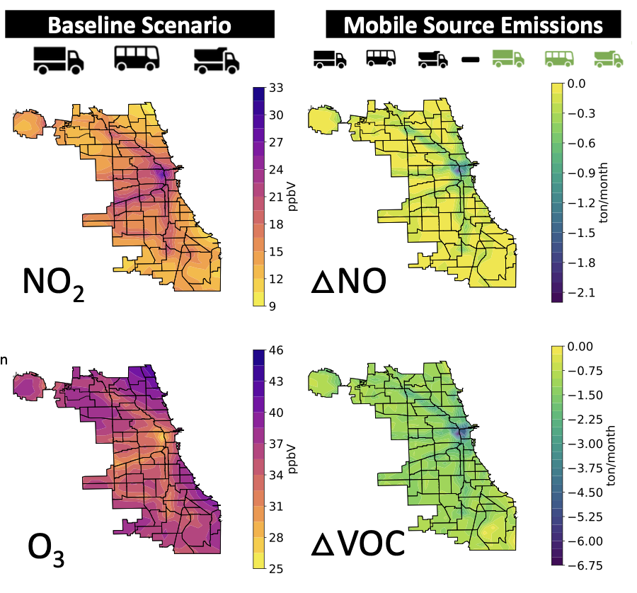
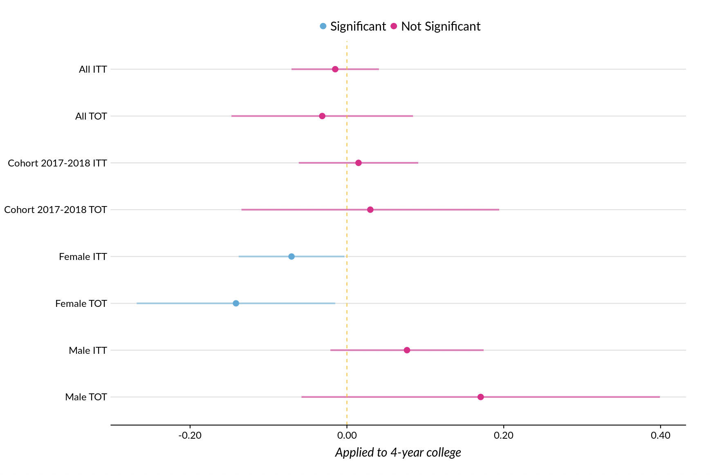
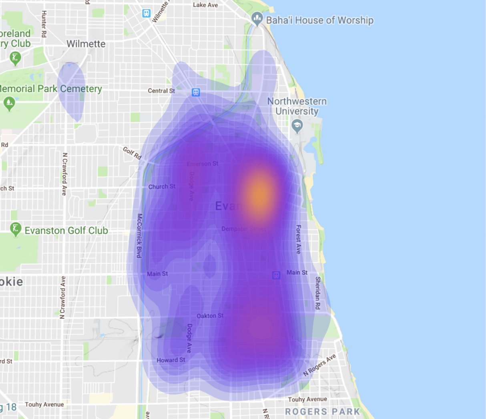
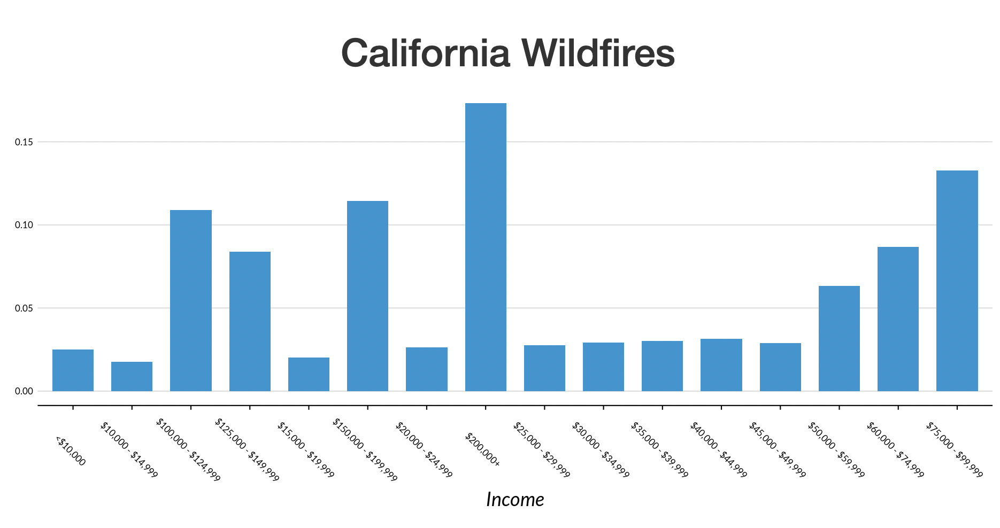

Air Quality Impacts of Electrifying Chicago's Buses

Urban Alliance Regressions

Evanston Police Arrests

FEMA Disaster Assistance
Articles and Other Links
How Can Policymakers Ensure the Push for Electric Vehicles Doesn’t Harm Low-Income Communities and Communities of Color?
The End of the National Eviction Moratorium Will Be Costly for Everyone
With Increasing Climate Disasters, Who Receives Assistance Matters
Equitable Climate Adaptation Requires Accounting for Disparities in Exposure and Resources
Equitable Investments in Resilience: A Review of Benefit-Cost Analysis in Federal Flood Mitigation Infrastructure
The End of the National Eviction Moratorium Will Be Costly for Everyone
With Increasing Climate Disasters, Who Receives Assistance Matters
Equitable Climate Adaptation Requires Accounting for Disparities in Exposure and Resources
Equitable Investments in Resilience: A Review of Benefit-Cost Analysis in Federal Flood Mitigation Infrastructure